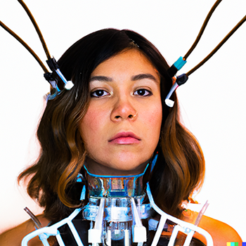

Fabiola Larios (b. 1986) is a Mexican interdisciplinary artist based in Miami, currently in residence at Bakehouse Art Complex. Her work explores the aesthetics and politics of surveillance, self-representation, and obsolescence in the digital age. Through installations that fuse e-waste, glitter, vintage electronics, and bedazzled surveillance cameras, Larios critiques how identity is shaped by algorithmic systems and economies of visibility.
Blending hyper-feminine visual languages with sharp commentary on internet culture, data commodification, and the environmental costs of technological excess, her installations often position viewers as both subject and observer—immersing them in environments of playful, uncanny scrutiny.
Selected group exhibitions include:
In 2025, Larios will present DivineSurveillance_1999 at the Net Art Gala in New York City—an interactive browser-based work styled after a Y2K desktop surveillance interface, exploring faith, digital observation, and spammy online rituals. She also participated at the New Media Block Party and Floating Film PAMM.TV at Pérez Art Museum Miami. Her project Cuteveillance—a machine vision experiment combining MidJourney image generation with a YOLOv7 object detection model trained on real surveillance footage—has been selected for CVPR 2025, curated by Luba Elliott. The project interrogates AI perception, aesthetic camouflage, and the politics of visibility under automated recognition systems.
Larios was awarded the Jóvenes Creadores grant in New Technologies by Mexico’s Ministry of Culture in 2021.